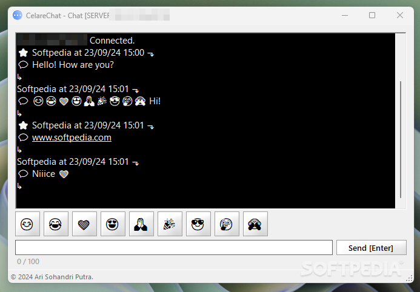

Innovative Software for Every Need.

Phone/WhatsApp: +62 813 5356 1716
Innovative Software for Every Need. |
|
Email: users.ariproject@gmail.com Phone/WhatsApp: +62 813 5356 1716 |
CelareChat |
CelareChat is a chat application that allows users to communicate both as a server and client. The app supports communication between devices on the local network or over ports that can be forwarded using services such as Ngrok. |
 |
| CelareChat | 1.0 | 1.6 MB | Download | 1.5 |
CelareChat is a straightforward communication tool designed for seamless messaging between devices on the same local network. With support for server-client architecture and optional port forwarding via services like Ngrok, it provides an easy way to stay connected with peers, friends, and family in a LAN environment. Core Features of CelareChat
How It Works
Who is CelareChat For?CelareChat is an excellent solution for users who need a lightweight LAN messaging tool. While it may not rival modern chat apps in terms of features, its simplicity and ease of use make it a practical choice for local network communication. For quick and reliable LAN messaging without the complexities of internet-based solutions, CelareChat offers a handy and efficient option. |
Copyright (C) 2025 Ari Sohandri Putra. Read License Terms